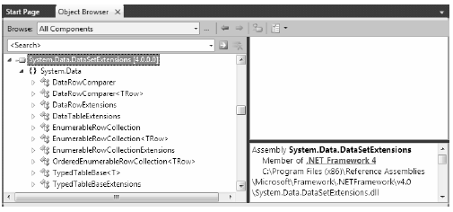

You have seen in this chapter that you can manipulate the data within a DataSet in three distinct manners:
When you use the various indexers of the DataSet and DataTable type, you can interact with the contained data in a straightforward but loosely typed manner. Recall that this approach requires you to treat the data as a tabular block of cells, as in this example:
static void PrintDataWithIndxers(DataTable dt) { // Print the DataTable. for (int curRow = 0; curRow < dt.Rows.Count; curRow++) { for (int curCol = 0; curCol < dt.Columns.Count; curCol++) { Console.Write(dt.Rows[curRow][curCol].ToString() + "\t"); } Console.WriteLine(); } }
The CreateDataReader() method of the DataTable type offers a second approach, where you can treat the data in the DataSet as a linear set of rows to be processed in a sequential manner. This allows you to apply a connected data reader programming model to a disconnected DataSet:
static void PrintDataWithDataTableReader(DataTable dt) { // Get the DataTableReader type. DataTableReader dtReader = dt.CreateDataReader(); while (dtReader.Read()) { for (int i = 0; i < dtReader.FieldCount; i++) { Console.Write("{0}\t", dtReader.GetValue(i)); } Console.WriteLine(); } dtReader.Close(); }
Finally, you can use a strongly typed DataSet to yield a code base that allows you to interact with data in the object using properties that map to the column names in the relational database. Using strongly typed objects allows you to author code such as the following:
static void AddRowWithTypedDataSet() { InventoryTableAdapter invDA = new InventoryTableAdapter(); AutoLotDataSet.InventoryDataTable inv = invDA.GetData(); inv.AddInventoryRow(999, "Ford", "Yellow", "Sal"); invDA.Update(inv); }
While all of these approaches have their place, the LINQ to DataSet API provides yet another option to manipulate DataSet data using LINQ query expressions.
Note You only use the LINQ to DataSet to apply LINQ queries to DataSet objects returned by a data adapter, but this has nothing to do with applying LINQ queries directly to the database engine itself. Chapter 23 will introduce you to LINQ to Entities and the ADO.NET Entity Framework, which provide a way to represent SQL queries as LINQ queries.
Out of the box, the ADO.NET DataSet (and related types such as DataTable and DataView) do not have the necessary infrastructure to be a direct target for a LINQ query. For example, the following method (which uses types in the AutoLotDisconnectedLayer namespace) results in a compile-time error:
static void LinqOverDataTable() { // Get a DataTable of data. InventoryDALDisLayer dal = new InventoryDALDisLayer( @"Data Source=(local)\SQLEXPRESS;" + "Initial Catalog=AutoLot;Integrated Security=True"); DataTable data = dal.GetAllInventory(); // Apply a LINQ query to the DataSet? var moreData = from c in data where (int)c["CarID"] > 5 select c; }
If you were to compile the LinqOverDataTable() method, the compiler would inform you that the DataTable type provides a query pattern implementation. Similar to the process of applying LINQ queries to objects that do not implement IEnumerable<T>, ADO.NET objects must be transformed into a compatible type. To understand how to do so requires examining the types of System.Data.DataSetExtensions.dll.
The System.Data.DataSetExtensions.dll assembly, which is referenced by default in all Visual Studio 2010 projects, augments the System.Data namespace with a handful of new types (see Figure 22-27).
Figure 22-27 The System.Data.DataSetExtensions.dll assembly
The two most useful types by far are DataTableExtensions and DataRowExtensions. These classes extend the functionality of DataTable and DataRow by using a set of extension methods (see Chapter 12). The other key class is TypedTableBaseExtensions, which defines extension methods that you can apply to strongly typed DataSet objects to make the internal DataTable objects LINQ aware. All of the remaining members within the System.Data.DataSetExtensions.dll assembly are pure infrastructure, and they are not intended to be used directly in your code base.
Now let’s look at how you use the DataSet extensions. Assume you have a new C# Console Application named LinqToDataSetApp. Add a reference to the latest and greatest version (3.0.0.0) of the AutoLotDAL.dll assembly and update your initial code file with the following logic:
using System; using System.Data; // Location of strongly typed data containers. using AutoLotDAL; // Location of strongly typed data adapters. using AutoLotDAL.AutoLotDataSetTableAdapters; namespace LinqToDataSetApp { class Program { static void Main(string[] args) { Console.WriteLine("***** LINQ over DataSet *****\n"); // Get a strongly typed DataTable containing the current Inventory // of the AutoLot database. AutoLotDataSet dal = new AutoLotDataSet(); InventoryTableAdapter da = new InventoryTableAdapter(); AutoLotDataSet.InventoryDataTable data = da.GetData(); // Invoke the methods that follow here! Console.ReadLine(); } } }
When you wish to transform an ADO.NET DataTable (including a strongly typed DataTable) into a LINQ-compatible object, you must call the AsEnumerable() extension method defined by the DataTableExtensions type. This returns an EnumerableRowCollection object that contains a collection of DataRows.
You can then use the EnumerableRowCollection type to operate on each row using basic DataRow syntax (e.g, indexer syntax). Consider the following new method of your Program class, which takes a strongly typed DataTable, obtains an enumerable copy of the data, and prints out each CarID value:
static void PrintAllCarIDs(DataTable data) { // Get enumerable version of DataTable. EnumerableRowCollection enumData = data.AsEnumerable(); // Print the car ID values. foreach (DataRow r in enumData) Console.WriteLine("Car ID = {0}", r["CarID"]); }
At this point, you have not applied a LINQ query; however, the point here is that the enumData object can now be the target of a LINQ query expression. Again, notice that the EnumerableRowCollection contains a collection of DataRow objects because you are applying a type indexer against each sub-object to print out the value of the CarID column.
In most cases, you do not need to declare a variable of type EnumerableRowCollection to hold the return value of AsEnumerable(). Rather, you can invoke this method from within the query expression itself. Here is a more interesting method of the Program class, which obtains a projection of CarID + Makes from all entries in the DataTable where the color is red (if you don’t have any red autos in your Inventory table, you update this LINQ query as necessary):
static void ShowRedCars(DataTable data) { // Project a new result set containing // the ID/color for rows where Color = Red. var cars = from car in data.AsEnumerable() where (string)car["Color"] == "Red" select new { ID = (int)car["CarID"], Make = (string)car["Make"] }; Console.WriteLine("Here are the red cars we have in stock:"); foreach (var item in cars) { Console.WriteLine("-> CarID = {0} is {1}", item.ID, item.Make); } }
One undesirable aspect of the current LINQ query expression is that you use numerous casting operations and DataRow indexers to gather the result set, which could result in runtime exceptions if you attempt to cast to an incompatible data type. To inject some strong typing into your query, you can use the Field<T>() extension method of the DataRow type. Doing so lets you increase the type safety of your query because the compatibility of data types is checked at compile time. Consider the following update:
var cars = from car in data.AsEnumerable() where car.Field<string>("Color") == "Red" select new { ID = car.Field<int>("CarID"), Make = car.Field<string>("Make") };
In this case, you can invoke Field<T>() and specify a type parameter to represent the underlying data type of the column. As an argument to this method, you pass in the column name itself. Given the additional compile-time checking, you should consider it a best practice to use Field<T>() (rather than the DataRow indexer) when you process the roles of a EnumerableRowCollection.
Beyond the fact that you call the AsEnumerable() method, the overall format of the LINQ query is identical to what you have already seen in Chapter 13. Given this, there is no reason to repeat the details of the various LINQ operators here. If you wish to see additional examples, you can look up the topic “LINQ to DataSet Examples” in the .NET Framework 4.0 SDK documentation.
It is also possible to populate the data of a new DataTable easily, based on the results of a LINQ query and provided that you are not using projections. When you have a result set where the underlying type can be represented as IEnumerable<T>, you can call the CopyToDataTable<T>() extension method on the result, as in this example:
static void BuildDataTableFromQuery(DataTable data) { var cars = from car in data.AsEnumerable() where car.Field<int>("CarID") > 5 select car; // Use this result set to build a new DataTable. DataTable newTable = cars.CopyToDataTable(); // Print the DataTable. for (int curRow = 0; curRow < newTable.Rows.Count; curRow++) { for (int curCol = 0; curCol < newTable.Columns.Count; curCol++) { Console.Write(newTable.Rows[curRow][curCol].ToString().Trim() + "\t"); } Console.WriteLine(); } }
Note It is also possible to transform a LINQ query to a DataView type by using the AsDataView<T>() extension method.
You might find this technique helpful when you wish to use the result of a LINQ query as the source of a data binding operation. Recall that the DataGridView of Windows Forms (as well as an ASP.NET or WPF grid control) supports a property named DataSource. You could bind a LINQ result to the grid as follows:
// Assume myDataGrid is a GUI-based grid object. myDataGrid.DataSource = (from car in data.AsEnumerable() where car.Field<int>("CarID") > 5 select car).CopyToDataTable();
This wraps up the examination of the disconnected layer of ADO.NET. Using this aspect of the API, you can fetch data from a relational database, munch on the data, and return it for processing while keeping the database connection open for the shortest possible amount of time.
Source Code You can find the LinqOverDataSet example under the Chapter 22 subdirectory.